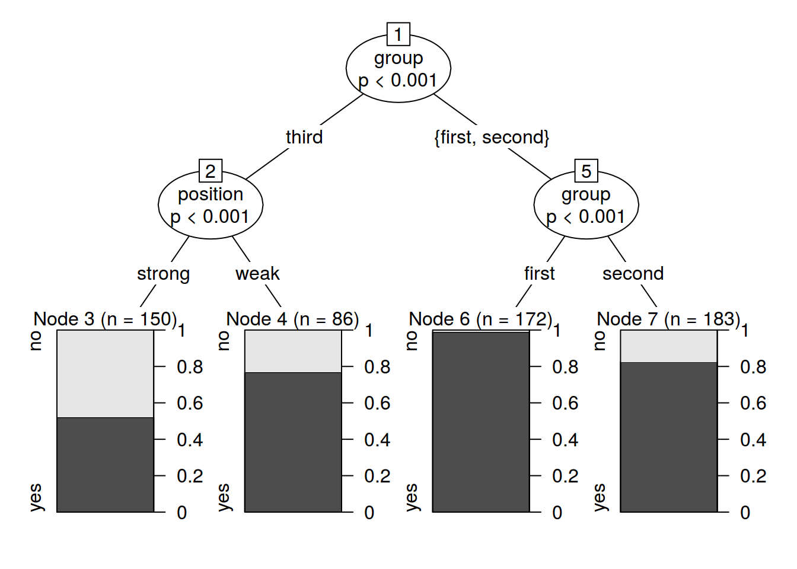
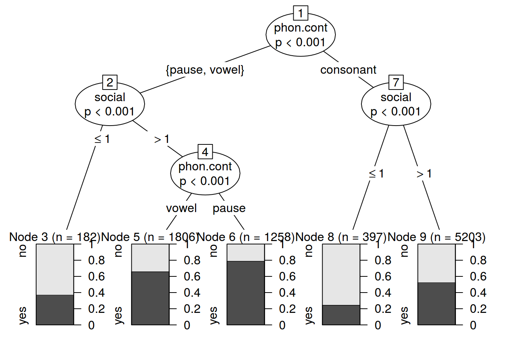

library(party)df <- read.csv("http://goo.gl/aE3yVg")
fit <- ctree(v.elision~., data = df)
plot(fit)
print(fit)##
## Conditional inference tree with 4 terminal nodes
##
## Response: v.elision
## Inputs: group, word, position
## Number of observations: 591
##
## 1) group == {third}; criterion = 1, statistic = 87.011
## 2) position == {strong}; criterion = 0.999, statistic = 14.01
## 3)* weights = 150
## 2) position == {weak}
## 4)* weights = 86
## 1) group == {first, second}
## 5) group == {first}; criterion = 1, statistic = 27.204
## 6)* weights = 172
## 5) group == {second}
## 7)* weights = 183predict(fit, df[45,-1], response = TRUE)## [1] yes
## Levels: no yesfit2 <- cforest(v.elision~., data = df, controls=cforest_unbiased(ntree=1000, mtry=2))
predict(fit2, df[45,-1],OOB=TRUE)## [1] no
## Levels: no yesvarimp(fit2)## group word position
## 0.04977419 0.01377419 0.02137788df <- read.csv("https://goo.gl/F9m4O2")
fit <- ctree(s.deletion~phon.cont+social, data = df)
plot(fit)
print(fit)##
## Conditional inference tree with 5 terminal nodes
##
## Response: s.deletion
## Inputs: phon.cont, social
## Number of observations: 8846
##
## 1) phon.cont == {pause, vowel}; criterion = 1, statistic = 344.156
## 2) social <= 1; criterion = 1, statistic = 92.762
## 3)* weights = 182
## 2) social > 1
## 4) phon.cont == {vowel}; criterion = 1, statistic = 61.559
## 5)* weights = 1806
## 4) phon.cont == {pause}
## 6)* weights = 1258
## 1) phon.cont == {consonant}
## 7) social <= 1; criterion = 1, statistic = 118.054
## 8)* weights = 397
## 7) social > 1
## 9)* weights = 5203predict(fit, df[1,-c(1:2)], response = TRUE)## [1] no
## Levels: no yesfit2 <- cforest(s.deletion~phon.cont+social, data = df, controls=cforest_unbiased(ntree=100, mtry=2))
varimp(fit2)## phon.cont social
## -2.150538e-05 3.702304e-02predict(fit2, df[45,-1],OOB=TRUE)## [1] no
## Levels: no yes